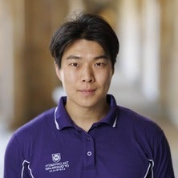
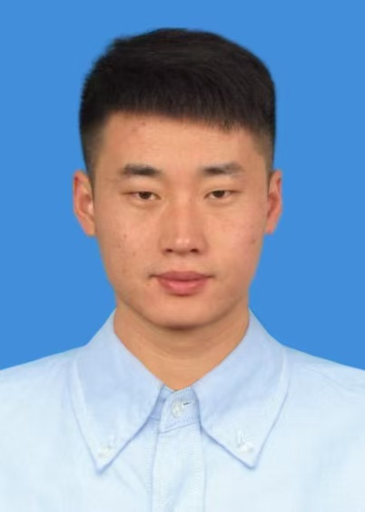
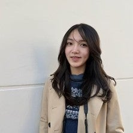
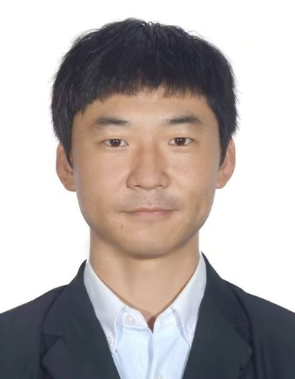
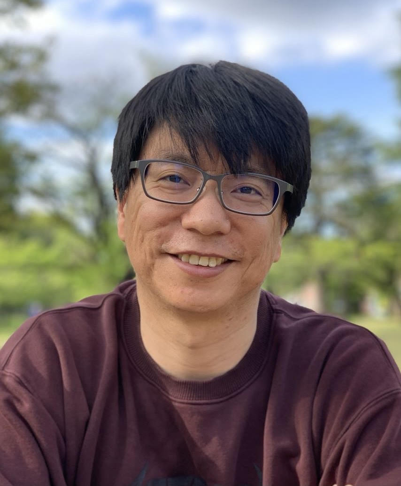

Workshop organizers
|
 Zijian Wang ARC Early Career Industry Fellow and Lecturer, The University of Queensland, Australia |
 Shijie Wang Research Fellow, School of Electrical Engineering and Computer Science, The University of Queensland, Australia |
| Hao Lu Associate Professor, Huazhong University of Science and Technology, China |
 Yadan Luo ARC DECRA and Senior Lecturer, The University of Queensland, Australia |
|
 Shouyang Liu Professor, Nanjing Agricultural University; Distinguished Professor of Jiangsu Province, China |
 Wei Guo Associate Professor, The University of Tokyo, Japan |